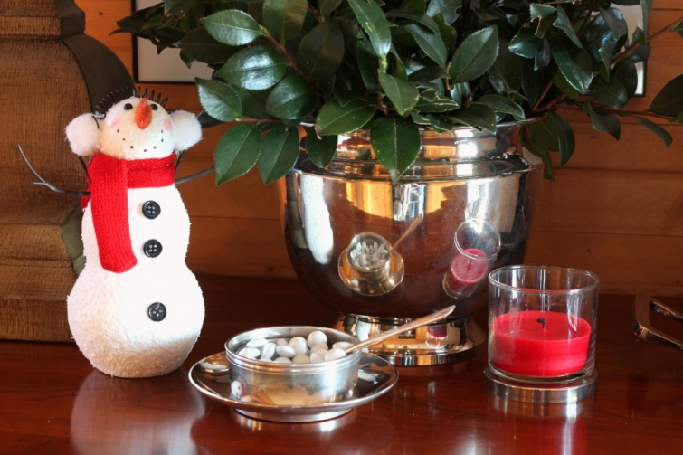

.png)
.PNG)
.PNG)
.PNG)
.PNG)
.PNG)
.JPG)
.JPG)
.PNG)
.PNG)


Normally January makes me want to decorate with blue, but for some reason this year, I wanted to keep up all the red after Christmas. Red is such a warm color and feels more cozy to me than blue in these cold months, and it lends itself to Valentine’s Day as well. Definitely another advantage for red! So no blue here this January.
This was supposed to be the start of a “Winter Home Tour” post for you, but as I was looking at the photos, the teacher in me wanted to give you a list of things to notice..things that you could do in your own home (that many of you are probably already doing)…things that will work for both January and February. With that in mind, the home tour changed into a Decorating Ideas post. I hope that is alright with you.
So what are my 10 easy and fun ways to decorate for winter?
1. Reuse Christmas decor.
Yes, I am serious, but I do not mean your tree. 🙂 Look for decorations that say winter...not Christmas. I found several snowmen tremendously reduced in price at an after Christmas sale. (And I changed out the scarf on the one in the playroom.) They work just as well in January as they do in December (and if I tie a little heart on a string suspended from those branch arms, they will be great right on through Valentine’s Day. 🙂 )
2. Use mittens and gloves in your decorating.
Mittens and gloves add texture and coziness to winter vignettes – not to mention color.

3. Display snacks and sweets in jars.
Cookies, candies, and even white chocolate dipped pretzels look pretty (and taste delicious!) when displayed in jars. If you have a fireplace, you can keep a jar of marshmallows nearby for roasting. For a movie night when you are all snowed in, have popcorn ready in a jar with movie candies close by. Use various size jars for even greater decorating impact.
(You could always change the message on the tag to “I love you snow much” for Valentine’s Day.)
Yes, I can hear you groaning. 🙂
4. Add cups and mugs to a winter vignette.
You know those cups and mugs that you just love? Why not pull them out and use them in a grouping? Instant warm-up-your-winter accent. 🙂 And if you have a thermos or two somewhere in your stash, they also work wonderfully!
5. Use cut branches from evergreens for winter arrangments.
There are tulips in abundance in our local grocery store, and although I do love them, I am not quite ready to use them. They say spring, and we are just barely getting started on winter here in the South. I just want some greenery…without having to purchase a plant. There are plenty of evergreens in our yard, so making an arrangement with cuttings from them works well.
6. Use cozy throws and sweater textured pillows.
Anything you can do to warm up your room in winter is smart. Placing throws across chairs and sofas or in a basket keeps them handy for use. And while fur seems to be the latest trend, I prefer the less sophisticated (more cottage like) look of sweater knit for throw pillows in winter.
7. Display family photos that were taken in winter.
Do you have photos from a family ski trip or from playing in the snow? Now is the perfect time to bring them out of the storage box or to print them from your computer.
8. Light candles.
Nothing warms up a room or gives it more coziness than lit candles. (Well actually a fire in a fireplace does, but if you don’t have one of those, use candles. 🙂 )
9. Use the elements of winter in your decorating.
What does that mean? Well, it means that you can have fun using any and all references to snow that you can find. From snowmen to snowballs in jars to candles in sugar snow…they are all game for seasonal decorating possibilities. 🙂
10. Have fun with winter on chalkboards.
I don’t think this one really needs anything added to it other than just showing you. 🙂
And there you have it! 10 easy ideas for some winter decorating. 🙂 The biggest thing I want you to keep in mind is to simply have FUN with your home decor. You and your family live there, and more than likely, you are spending more time inside during the winter months. So shouldn’t it be a place for fun and enjoyment – especially during the winter?
I know this post should have come out in late December or early January to be most helpful, but maybe you can pin this image to a Pinterest board so that you will remember some of the ideas next year. 🙂
I’ll be back next time with the kitchen and dining room in their winter attire. 🙂
Until then…
Stay warm!


.PNG)
Kelly, you always make everything you do look effortless!! Have you ever had a major “fail” when entertaining/decorating?
What a lovely, lovely party for your father-in-law. Embrace your precious parents…..mine are both gone now and I miss them tremendously.
Thanks for sharing your home and your life with your many online friends. God bless you.
~M
————————————————————————
I’ve had birthday cakes that don’t look worth a flip! (But they taste fine.) My biggest problem with entertaining is I am never finished with everything when it is time for guests to show up…no matter how far ahead I start. (My husband was still outside putting out pinestraw when his parents arrived for the birthday party!) I guess I just put too much on those to-do lists. 🙂
Kelly
You inspire me! Thanks. Helps with the winter blahs.
Love these great ideas for winter decorating. Your home always looks amazing! I’d love to cozy up in front of that fireplace.
Great ideas! Thanks for the permission to use Christmas decor. I actually thought about using my snowmen but I put them away. I am ready for spring even though we have a foot of snow in the forecast! I love the chalkboard ideas and your VW bus in the snow. Oh, and the winter photos…I do have some of those I can embrace. Maybe I will rethink spring. (Not sure I have a choice!)
Your 10 tips are great! I even have a snowman painting that my son did at one of those canvas painting stores hanging on the wall with some Jan Karon snowmen plates! You also gave great ideas for my new mantel that my husband installed for my Christmas present. I have a small green tree and placed it in a small bucket with some other items that I had around the house and it looks wintery and so cute!
Hi Kelly! Thanks for these great ideas!January is a little bit a kind of “party empty” time between Christmas and Valentine’s day so your suggestions come at the right time for me! 🙂 Have a nice day,
Claire
Hi Kelly loved looking at your home in the December 7 Th Christmas Ideas magazine! I really loved the girls bedroom and was wondering where you got the quilts from I just love them and haven’t seen anything like them on the web! Thank you
——————————————————————–
I am so glad you liked the room Cynthia! Those comforters are the Dolly pattern from a few years ago at Pottery Barn. I purchased all of the comforters and pillow shams through several Ebay auctions. Some are still available there today. So check around if you are interested. 🙂
Kelly
I love your ideas, they make winter a bit more tolerable. I noticed your black wicker lamp, I know how you like to paint and was wondering if you painted this lamp. I have a purple one from the 70’s and was wondering if I could paint it. Love your home!
———————————————————————-
Most definitely painted! I bought a bunch of those lamps years ago at Lowes, and they were white when I purchased them. Spray paint is your friend. 🙂
Kelly
I love all the red and white–and SNOW theme! Everything looks so cozy and inviting. I imagine hot cocoa (or coffee) tastes even better sitting in front of that fireplace. 🙂
Strange dream last night. I dreamed that you (along with your husband) did a post/recipe about how y’all make his ‘famous’ dried beef jerky. LOL I remember thinking *in my dream* that the post was a bit of departure from the things you normally share–but the jerky really did look tasty.
Again, love the winter decorating tips!
Blessings,
Amy
———————————————————————–
That is hilarious!! Can’t say that I have even tasted beef jerky, but I am sure my camp-loving husband would enjoy it if we made some. I keep having recurring dreams about visiting the Study Hotel in New Haven…maybe that means my husband and I should go visit our son at Yale. 🙂
Kelly
Ditto all the other admiring comments! Really enjoyed that “soul refresher”! I especially liked your use of green… guess I’m still fatigued by Christmas red and anticipating Valentine’s red, so the swing to the opposite side of the color wheel is a rejuvenating break for me. The snowballs, mugs, and mittens? Delightful! 🙂
LUCKY!!! I just found the large, large glass jar with a lid.
I have been searching as long as I have followed you and that is a long, long time. Have many in different sizes but the BIG was never available. I was going to sneak you a personal email (too embarrassed to ask on comment) and ask what do I put in it NOW for winter? You just published and gave me several suggestions! Great minds think alike. What is snow sugar? Where do I purchase?
Your home looks beautiful, comfortable. FORGET the blue! We are r e d girls.
Give us a line or details on some snowmen available for sale.
I have many but want more. This is the reason I like them for Christmas. They work until spring.
Share some winter cooking? Winter attire?
Enjoy!
PS all kids back to their homes?
————————————————————————–
Congratulations on finding the big jar! And I am so sorry it took you so long to track one down.
Sugar snow…it’s just plain ol’ sugar that is acting like snow. I tried powdered sugar on/in several things, but it never looked as good as the granulated kind. So all the jars with the “snowballs” have regular granulated sugar in them. Hope you are having fun filling your jars for February!
And yes all the kids went back by the end of December. Missing them now (but not the electric bill we got for the time they were here. Glory what a big one!! 🙁 )
Kelly
Great ideas! I agree with carrying over some of your Christmas decor since snowmen, etc. fit right in for winter. I love the winter photos. That is something easy and I’m sure brings a big smile to your face every time you see them. I need to go through my pictures! The fire looks so warm and cozy! I could use it now since the snow is really coming down outside my window right now. 🙁 I have one snowman still out. I repainted his scarf, earmuffs, etc. orange and blue for Virginia Cavaliers. 🙂 I also still have a “hot chocolate station” out and a small live tree. I plan to hang some card stock hearts on it today. Haha, I have to make them first though. 😉 Thanks for all the inspiration Kelly! 🙂
Kelly, you mentioned that you swap out the scarves on the snowmen. Where do you get those tiny scarves? I would love to just add to some things I have sitting out but, other than making them, not sure where to find those cute little things. Love your decorating as always.
———————————————————————
Hi Kathy! I am afraid I did not buy the little accessory things. The cap on the snowman was actually an orphaned glove that I simply tucked the fingers inside and added a little red poof from an old doll’s hat to. (A single pompom from Walmart’s fabric aisle would probably work just as well.) The “scarf” is simply a strip of fabric from a scrap I had. I just clipped the ends to look like fringe and draped it around the snowman/snowwoman. Super easy. 🙂
Kelly
What adorable ideas!! Tell me – what exactly are the snowballs made of? I’m curious!
——————————————————————-
Glad you liked them Debbie! The snowballs are simply assorted sizes of Styrofoam balls that I “squished” all over with my fingers to make them look like packed snowballs. Easy to do, but it does give your fingers a workout. 🙂
Kelly
I feel more cozy just by reading and looking at the pictures! Love the family room shot of the fire place! I use snowmen too and add red birds and hearts and winter greens. Thanks for these winter ideas— winter has been so late arriving this year I’m like you not ready for spring yet. I do love the spring bulb flowers inside but they really don’t last too long. Today is a beef vegetable soup kind of day and oatmeal chocolate chip cookies, don’t you think!? Happy frosty day to you, Kelly!
———————————————————————
Well good Louvina! That is so smart of you to add the red birds and hearts to the snowmen for winter decorating. Your lunch sounds absolutely delicious! Made me hungry! Happy frosty day to you too. 🙂
Kelly
Kelly,
You have such great ideas for decorating. Thanks for sharing you beautiful home!!
———————————————————————-
Thank you for reading and for your compliments Kaye Ann! 🙂
Kelly
Hi Kelly,
What a fun blog today. I just pulled my Christmas snowman from storage and we are headed to Hobby Lobby to find fabric for a new vest, maybe Valentine fabric. Thanks for the great ideas today.
————————————————————————
I’m delighted you enjoyed the post Jean! Good for you to pull out the snowman! Have fun at Hobby Lobby. I need to make a run there myself!
Kelly
Kelly your home is always so inviting. I imagine guests are delighted to be in your home. What clever, simple, tips! Happy New Year!
———————————————————————-
Thank you Cindy. We do have a good time here!
Happy New Year to you too.
Kelly
Kelly,
I think this post is timely. I’m enjoying the cooler weather and my NY goal is to take the time to enjoy the here and now. You always give me great ideas of inspiration for my own home. How cute are those snowmen—I’m definitely borrowing that idea!
Happy Winter!
xo,
Karen
———————————————————————–
What a great goal Karen! And yes, you go right ahead and borrow the snowmen idea. I hope we see real snow soon!
Kelly
Kelly, how perfectly adorable and such a great idea to decorate for winter. The house is always so bare after Christmas is put away. I am thinking of the cute little snowmen I have packed up along with the Christmas decorations and while I have no plans to haul everything out (my husband would not be amused. He’s usually the one to put it all back), it has given me the idea of separating the winter items from the Christmas decorations next year. Then it’s all in one box – marked Winter! In the meantime do the strewn coats and mitts count as winter decor?! Have a great day.
——————————————————————-
Thanks Tricia! Yes, separate the winter from Christmas, and you will be ready for January decorating. And yes, the strewn coats and mittens count! LOL
Kelly
Hi Kelly,
You may have mentioned it before but what is the paint color on your walls (the grey color)
Just redoing a Maine cottage and want a color I can use throughout and accent in different ways in different rooms. Trying to keep it simple as this is a vacation home. Thanks
————————————————————————
It is more taupe than grey. It started as an old Martha Stewart paint called Twine that is not made anymore. The best match is Benjamin Moore’s Brandon Beige. I also used Valspar’s Lyndhurst Timber in some of the rooms. It is also a very close match with less of a green tint than the Brandon Beige, but our family room is the Brandon Beige.
Kelly
I like your ideas. I started decorating for the winter season last year for the first time. It was fun. It brings joy and color to an otherwise gloomy time of the year after the festive Christmas season. I love the snowmen you found on sale. They work so well with your photographs. I think my favorite vignette is your entry table. The touch of greenery is a nice idea. Who wouldn’t want to sit in front of the fire and enjoy the warmth of your cheerful living room? You inspire! Thanks for sharing, Kelly. Stay warm!
Sherry
———————————————————————–
Thank you Sherry. You were smarter than me to start the winter decorating last year. 🙂 (Of course we were still doing Christmas until mid-January last year, so I do have an excuse. LOL) Yes, parked in front of that fire is my favorite place to be in the house!
Kelly
Kelly – As usual your house looks so pretty! Thank you for all of the great winter ideas. I usually have a very hard time taking down my Christmas decorations…and when I do, I usually tend to leave up some red accents too so that my house doesn’t feel so cold and bare. I love the snowballs that you show in the playroom/den (green room) and on the mantle in your living room. Did you buy those or make them? If you made them…can you provide us with the instructions. I’d love to add those to my January decorations and maybe even reuse next December too. Thanks! Sarah
————————————————————————
Thank you Sarah. I hate “un-decorating” the house after Christmas. All the plain-ness makes me ask, “Where did Christmas go?”
I made the snowballs. Super duper easy. I simply bought several sizes of Styrofoam balls, and pushed in my thumb prints all over to look like packed snow. (It did give my hands a workout!) I used to paint them with Elmer’s glue and roll them in white glitter, but the syrofoam was so sparkly I did not think that was necessary. Then just place them in sugar for the snow.
I hope those snowballs are not the only “snow” we will see this year. 🙁 Crossing my fingers for February!
Kelly
Really enjoyed the decorating for Winter post. Our local grocery also has bunches of tulips and spring flowers and as much as I love them, I too just want to enjoy the season for what it is. And…. I do love snow! We are expecting a big snow on Friday and I am looking forward to a cozy weekend! This is my first year retired from teaching Kindergarten and I do miss decorating for each month in my classroom. So,I am channeling that energy now into my home and am really enjoying it. I also add seasonal family photos to my decorating. It’s such fun to relive those special memories! Thank you for continuing to inspire us!
———————————————————————-
You are welcome Cheryl. Thank you for enjoying the post. It does seem that the teacher in us makes us decorate seasonally…or maybe it was the decorator in us all along that just came out when we were teachers! LOL Lucky you to be getting snow! Wish we would get a little (or a lot!) here.
Stay warm!
Kelly
Everything looks beautiful…..as always! I Always love to see what kind of snack you have in your jars. Such a cool idea! Enjoy your winter decor!
————————————————————————
I’m so glad you liked it all Vicky! Yes, there are always snacks in the jar. Love the cookies I have right now in the dining room. They are YUMMY!
Kelly
As always, your home is so cozy!!! Love it!
———————————————————————
Thank you Delma. You are so kind!
Kelly
So many great ideas, Kelly and beautiful inspiration! I love the idea of displaying snacks and sweets in jars, but my problem would be, I’d never pass one without tasting! Happy Tuesday ~
———————————————————————
Thank you. They are simple, but work for seasonal decorating. And yes, the jars are VERY tempting…especially the ones in the dining room!
Kelly
Great ideas to cozy up rooms when winter is making us all stay inside!
Brenda
——————————————————————-
That was the goal Brenda. 🙂 Definitely want it cozy here. (It has been COLD!)
Kelly
Kelly,
I love your winter ideas and was needing some inspiration. After I took down all the Christmas decorations it did look a little bare around here. I have added extra throw blankets but I do like your jar and snack ideas. Thanks for sharing!
Dawn
——————————————————————–
Always glad to share here Dawn. I am happy you could find some inspiration in the post!
Kelly
This winter I have done the same thing! There are pieces that I wanted to enjoy longer than just Christmas, things that just said “Winter”. The little glittery cardboard houses, my sugar snow vignettes of children, and I also got out a few copper pieces that just said “cozy winter” to me. I looked for winter books to display – other than Christmas, but tempted to leave those out! Lol! I love books and I learn from you how to display them and change them around seasonally. I am busy collecting Jan Karon books – I have read the entire series, however the books were lent to me, so I am collecting them now, re- reading as I find them. I use those in my master bedroom. I love your Volkswagen vignettes, and remind me of the Volkswagen my parents owned when I was 6 years old. I loved riding in the little back compartment (no seatbelt requirements then! Lol! ). Thank you for so many ideas for my home!
——————————————————————-
Great thinking Vicki! (Great minds think alike. 🙂 ) It sounds like you have done a lovely job decorating for the season. And I love that you are collecting and re-reading Jan Karon’s books. She is currently working on one that is scheduled for publication in the fall of 2017. We have quite a long wait for that one, don’t we?!
Hope you are having a good week.
Kelly
I like all your tips. You inspired me with your glass jars a while ago and I love to fill them with fun things. You will find that once you have grandchildren all over the place that the jars don’t stay looking so decorative and you don’t even care. Actually, my husband is just as bad as the kids when it comes to eating anything not nailed down. I am always impressed that you are able to leave things unattended. My daughter and I used to hide things ( cookies, dark chocolate) from her father and 2 older brothers. I don’t comment as much as I used to, but I love your style and enjoy your interesting travels. I still am not able to do the beautiful,chalk handwriting…mine looks more like a kid trying to be fancy. Maybe one day!
——————————————————————–
Grandchildren for us are a very looooong way away…so we will keep on munching on our unattended snacks! LOL Thanks for taking the time to jump in to comment on the post. I know life is busy…which is why I don’t get to comment on other blogs like I once did. Keep on practicing your chalk handwriting. I find that it is so much easier to use the chalk pen than actual chalk. Good luck with it!
Kelly
I love all your ideas, Kelly! Several years ago I took my more winter decorations, like snowmen, and put them in their own box separate from the Christmas things.
Now when I put the Christmas things away I get out the winter things. I love your idea to use mittens and gloves in vignettes. I’ll have to “borrow” it!
Thanks for sharing your lovely home.
———————————————————————–
I’m so glad you like the ideas Maryanne! Love the idea of storing the winter items separately from the Christmas things. I will be putting the snowmen in my Jan.-Feb. storage box this year.
Kelly
Everything is adorable as always.
I have to admit it is my least favorite time of the year to decorate for. After the Christmas comes down, I always love the clutter free look, but still like something seasonal (guess that is the school teacher in me).
Some great ideas that I will have to remember because other than one small cross stitch piece in the kitchen I am season free longing for spring. Long way to go though! I need to learn to embrace winter as it really is a good time to slow down.
——————————————————————
Thank you Sandy. Yes, winter is a good time to slow down. If I waited until February for anything Valentine’s related, there would only be 2 weeks to enjoy that. So by introducing red now, I can enjoy it for a longer period of time with no rush. 🙂
Kelly